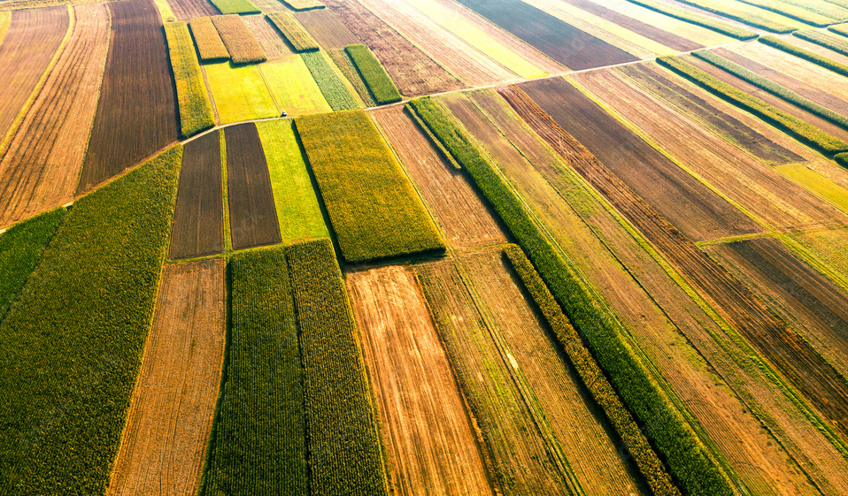

Agriculture
Agriculture is most likely the primary factor that promotes soil erosion due to the area of land cultivated and the amount of disturbance caused by farming techniques.
Farmers clear the ground of natural plants before plowing it to plant fresh seeds. Because most crops are only grown in the spring and summer, the land is fallow throughout the winter. Winter is also a stormy season in many places, so wind and rain may wash soil away. Tractor tires create deep grooves that function as natural waterways.
The use of chemicals in the form of insecticides and fertilizers on monocultural crops is a common method of assisting farmers in increasing yields. However, overuse of phosphoric compounds causes an imbalance of microorganisms in soil moisture, promoting the growth of dangerous bacteria. As soil degrades, the danger of erosion rises, and sediments wash into rivers and adjacent areas, potentially polluting nearby ecosystems.
At the same time, standard tillage practices used by farmers to prepare seedbeds by adding manure and nutrients, leveling the soil, and removing invasive seeds have a significant influence. Tillage hastens surface runoff and soil erosion because it breaks the soil's structure.